Nutritional Food Groups
Everyone needs a healthy, balanced diet, whether we have diabetes or not.
Type of food
You’ve learned in the previous section that rapid acting insulin is calculated based on what your blood sugar is pre-meal and how many carbs you plan to eat. To better understand how to calculate insulin based off carbohydrate consumption, we need to understand which foods have carbs and why they are important to our bodies.
Carbs
Raise blood glucose, brain’s preferred source of fuel.
Starch
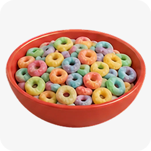
Cereal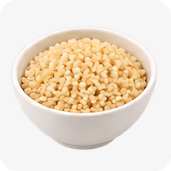
Grains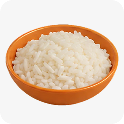
RiceStarchy vegetables
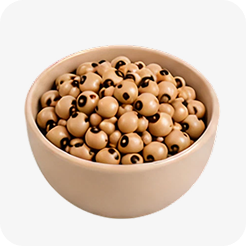
BeansAll fruits and fruit juices
Dairy
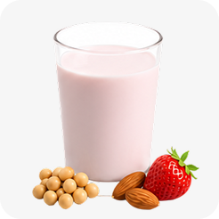
Flavored milk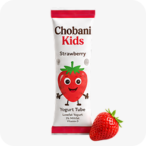
Yogurt stickSugary foods
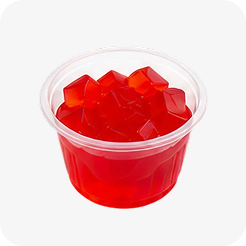
JellySweets and desserts
Fat
Fat is also used for energy, with some fats healthier than others. Fat alone do not directly raise blood sugar.
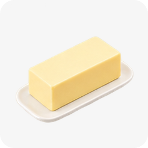
Butter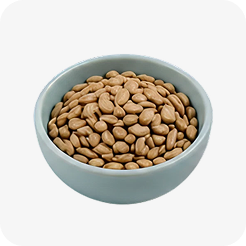
Seeds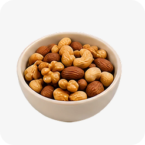
Grains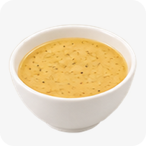
Salad dressing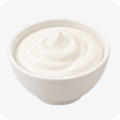
Sour cream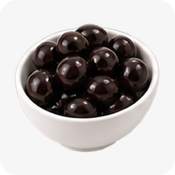
Olives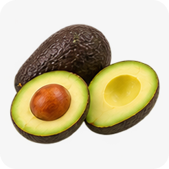
AvocadoProtein
Used to grow and repair cells in our body. Sometimes used for energy. Proteins have little effect on blood sugar and are not used in carb count unless breading or carbs are added.
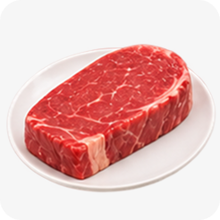
Beef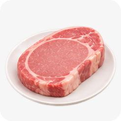
Pork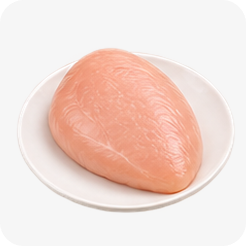
Chicken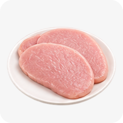
Turkey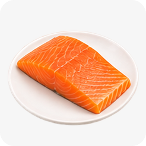
Fish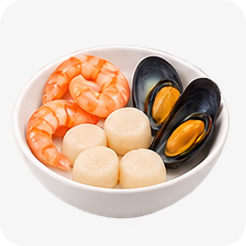
Seafood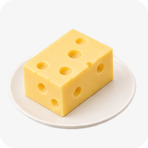
Cheese Nuts
Nuts
 Seeds
Seeds
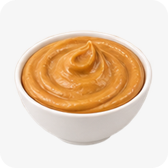
Peanut butterWhen carbohydrates are eaten with protein or fat containing food, sharp rise in blood sugar is not seen. Instead, ideal impact in blood glucose rise is seen.